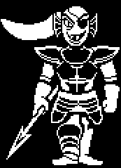

GENOCIDE ENDING
Jalur Genocide menggambarkan kehancuran total, di mana pemain membunuh semua monster yang ditemui hingga tidak ada yang tersisa. Chara, jiwa jahat yang terbangkitkan karena aksi pemain, mengambil alih cerita dan menghancurkan dunia bawah tanah sepenuhnya. Ending ini sangat gelap, menyoroti konsekuensi kekerasan dan kehilangan kontrol atas cerita, meninggalkan dunia dalam kehampaan.
Syarat:
- Bunuh semua monster di setiap area hingga pesan "But Nobody Came" muncul sebelum melanjutkan.
- Monster NPC, bahkan bos, tidak memiliki kesempatan untuk bertahan hidup.
Cerita:
- Pemain menjadi pembunuh tanpa ampun yang menghancurkan dunia bawah tanah sepenuhnya.
- Karakter seperti Papyrus, Undyne, dan Sans mencoba menghentikan Anda, tetapi semua dibunuh.
- Setelah semua monster dibunuh, pemain bertemu Chara, jiwa jahat yang bangkit karena aksi pemain. Chara "menghancurkan" dunia, dan pemain kehilangan kendali.
- Jika pemain mencoba memulai ulang permainan setelah jalur ini, mereka akan menemukan dunia telah "mati".
Pesan:
- Ending ini menggambarkan dampak destruktif dari kekerasan, serta memberikan refleksi tentang moralitas pemain.
